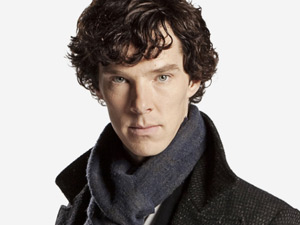
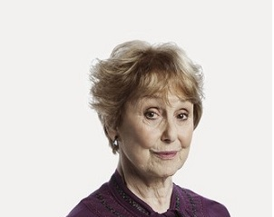

Cast and Characters
Sherlock Holmes  |
Sherlock Holmes, teh world's best detective of the 19 century, is known to have the most brilliant minds of intelligence. In 1887, he first appeared in publications.The character of Holmes was devised beautifully by Sir Arthur Conan Doyle, a Scottish author. Holmes is a London based detective is famous for his magnificent intelect of powers, which he used to solve cases with his logic and astute observations. He is one of the best detectived in literary characters. |
Dr.John Watson |
Formerly in the British Army, John H. Watson was a medical doctor. He is the only known friend and flatmate of Holmes since then. Watson was married to Mary Watson. In the writings of "A Study In Scarlet", Watson, the narrator, describes how he met Holmes, their shared apartment in 221B Baker Street, his attempts in trying to discover the profession of his high functioning socio-path roommate, how Holmes took him to confidence, and how they solved crime cases together, and finally how they became thick friends. |
Mycroft Holmes |
Mycroft Holmes, Holme's only known family, is his elder brother. Like his younger brother, Mycroft also possesses great observatory skills of deduction. There is also another common trait among the brothers, they both lack the inclinations to use their strengths in a wise manner. Mycroft was never willing to put physical effort behind his popwers.Due, to lack in practicality, he often failed his skills several times, when compared to his brother. He was a British government officer where he possessed a good role and often contributed in auditing books for government departments.His role was a substantial and influential one. |
Jim Moriarty |
Due to Sherlock's unique character, he tend to have more enemies rather than friends. Out of them, was James Moriarty, the biggest enemy of Sherlock Holmes. James was a math professor, and was involved in many crimes Professor James Moriarty, the arch-enemy of the famous Detective Sherlock Holmes, a mathematics professor turned the world's only consulting criminal. His genius is equal to, if not perhaps greater than, Holmes himself. Despite only appearing in two stories, Moriarty has been proven to be the most dangerous of all criminals that Holmes has ever encountered. In the short story "The Adventure of the Final Problem", during a fight with Holmes above the Reichenbach Falls, Moriarty fell to his death. |
Mrs.Hudson  |
Mrs Hudson is Sherlock Holmes' landlady. She makes occasional appearances in the original stories. Not much is known about Mrs Hudson. She is given no physical description or first name by Sir Arthur Conan Doyle. Not only was her first-floor flat invaded at all hours by throngs of singular and often undesirable characters but her remarkable lodger showed an eccentricity and irregularity in his life which must have sorely tried her patience. His incredible untidiness, his addiction to music at strange hours, his occasional revolver practice within doors, his weird and often malodorous scientific experiments, and the atmosphere of violence and danger which hung around him made him the very worst tenant in London. |
DI Lestrade |
Inspector G. Lestrade is a Scotland Yard detective appearing in several of the Sherlock Holmes stories by Sir Arthur Conan Doyle. Doyle used the name of an acquaintance from his days at the University of Edinburgh, a Saint Lucian whom Doyle disliked, although it has also been suggested that the name is an anagram of "Dearest L", a reference to Conan Doyle's first wife, Louisa. Lestrade is described as "a little sallow rat-faced, dark-eyed fellow" in A Study in Scarlet and "a lean, ferret-like man, furtive and sly-looking," in "The Boscombe Valley Mystery' |